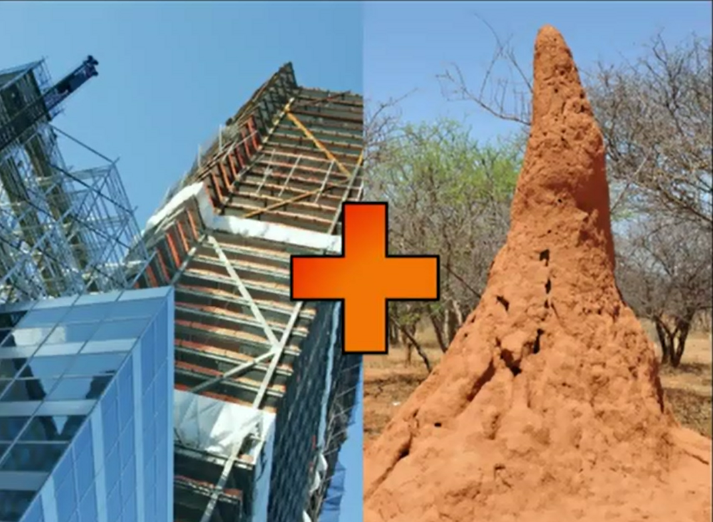
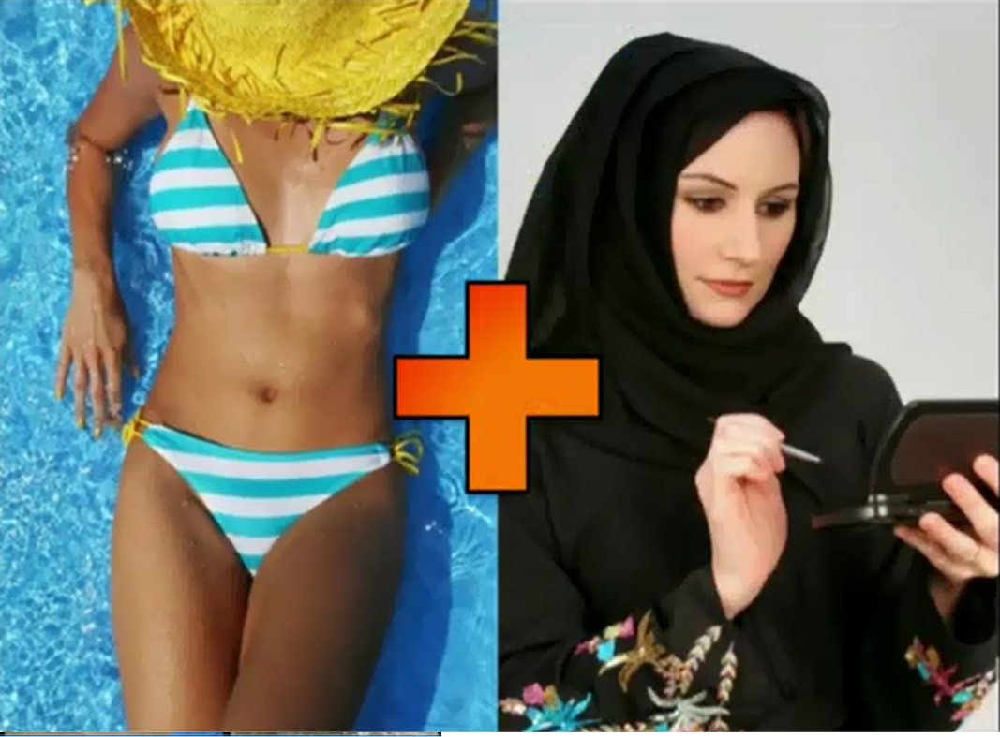
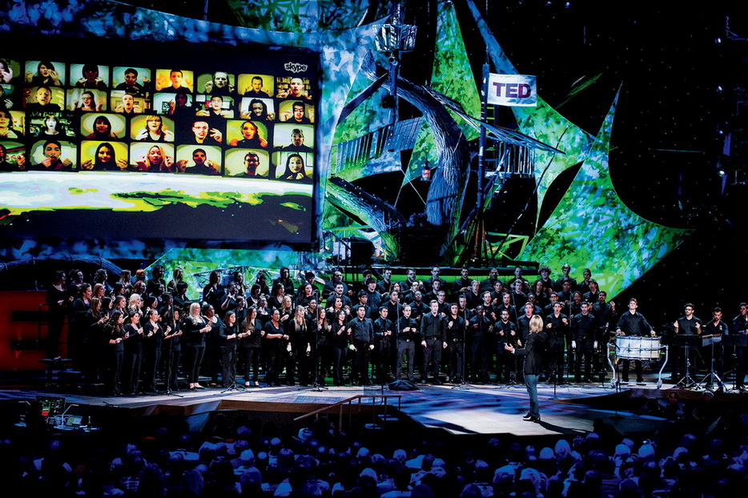

Some Ideas from TED
Interesting ideas
Created by Maowen Zhang
Agenda
- Where new ideas come from
- About TED
- TED 2013
- Interesting Ideas
Where new ideas come from

Design for Muslim women

All new ideas are combinations of existing ideas
About TED
TED (Technology, Entertainment, Design) is an invitation-only event where the world's leading thinkers and doers gather to find inspiration.
- Started as a four-day conference in 1984, TED has grown to support world-changing ideas with multiple initiatives.
- At TED, the world's leading thinkers and doers are asked to give the talk of their lives in 18 minutes.
www.TED.com
What's TED
不同行业撞出火花
- TED会议起源于上世纪80年代，技术界、娱乐界以及设计界的大佬们，支付一笔费用，每年召开一次私下的业界大会。
- "会议的目的就是让三个产业的人互相学习了解。不过，令人惊讶的情况发生了，不同行业之间的人们在交流知识的同时，碰撞出了很多新的想法，这些想法越变越广，所有的知识都互相联系起来。大家发现，哪怕你不在这个圈子里，这些想法也是非常有趣的。" - Chris Anderson
- 1998年，安德森买下了TED会议，把这个会议变成非营利机构。每年举行一次大会，大会演讲做成视频放在互联网上，供全球受众免费分享。
Why 18 minutes
为什么是18分钟？安德森解释称，因为他听到了一种科学研究说法，自然状态下，人的注意力最多能维持18分钟，哪怕超过20分钟后就很容易分心。短时间内的演讲，必须浓缩精华。“18分钟内，只能讲一个想法，没法说两个或者更多，所以我们会帮助演讲者挑选最强的那个想法来传播。我们鼓励他们排练，熟悉18分钟这个概念。”负责TED数字制作的执行制片人居内·科恩（June Cohen）向记者表示。
7500 $
- "它是个灵感大会，不仅有灵感，还有人，它是一群有想法的人聚在一起向其他人分享彼此想法的大会。"-一位从 1984 年就连续参加 TED 的乔恩·卡门
- 乔恩是奥斯卡获奖影片《战争迷雾》的制作人，在 1993 年创办了“激进媒体”公司，为好莱坞、音乐界与广告界制作各种各样的多媒体视频内容，如电影、音乐录影带、广告等，获奖无数。他坦言，自己是在 1992 年受到创办 MIT 媒体实验室的尼古拉斯·尼葛洛庞帝在 TED 演讲的启发，才决定开创这份事业。
传播影响世界
- TED纽约总部总是会收到全球“粉丝”的来信。他们会说，某某人的演讲如何改变了他们。
- 安德森表示，他最喜欢的一个演讲叫做《选择的悖论》。从心理学角度分析，自由越多，选择越多，并非越好，反而可能会产生压力、后悔、浪费，所以选择应该有意识地加以克制。听完这场讲座后，安德森去餐厅点餐，往往跟餐厅工作人员说，你有什么就给我什么。“我觉得现在事情更简单了，变得更快乐了。”
提前看见未来
超级大脑SPA & 未来四日游
- “未来和电脑打交道会相当有趣……手指是解析度非常高的输入媒体，优点之一是你不必去学习，人们没有意识到这有多重要，不需要去学习用你的手指去使用它们。”这是尼古拉斯·尼葛洛庞帝 1984 年在演讲里说过的话，现在手指确实如他所言成了广泛运用的输入设备，但它很快又将被淘汰。
- 今年戴着谷歌眼镜登台的塞吉·布林，告诉人们未来和手机的交流不该是低头摩擦手中的一块玻璃，现实世界和网络世界的边界将变得模糊不清。 “15 年前当我创立谷歌的时候，我的目标是让信息在你需要的时候自动出现在你身边。你甚至不需要搜索关键字。在 15 年后这是首个可以得到这种形式的方法。”
TED2013: The Young. The Wise. The Undiscovered

Some Topics
- 可穿戴设备, 基于方解石的隐身衣。MIT科学家带来的 4D 打印设备，如何让未受教育的聋人使用的 APP，怎样用开源的维基方式建房子……
- 埃隆·马斯克作为电动车特斯拉、空间探索技术公司 Xspace 和太阳能公司 SolorCity 的幕后主脑，在台上接受了克里斯·安德森的采访，平静叙述了未来世界能拥有的一切以及实现路径，并接受全场致意——没什么能比亲眼看到现实版“钢铁侠”描述未来更让人激动的了(据说美国科幻电影《钢铁侠》正是以埃隆·马斯克为原型的)。
机器时代
- “一个熟练工如何和一款 39 块钱的软件竞争?” 创新正在加速进行，我们正处于和机器赛跑的关键阶段：机器能代替人驾驶汽车、能高效翻译人类语言、能学习，并在智力节目里击败人类最佳选手……
- 麻省理工教授鲁尼·布鲁克斯就上来演示了他开发的表情丰富、肢体灵活的 Baxter 机器人，畅想了 500 年后机器人和人类世界共存的场景。
年轻一代
- 肯尼亚 13 岁少年理查德·特瑞里为了解决放牧时狮子袭击牲口的问题，通过LED灯泡、回收的太阳能供电板等设备，自主设计了一套间歇性闪烁的光源系统，装置在牧场的围栏上，狮子畏惧人工光源而不敢上前，于是从此再也没有丢过牛羊
- 15 岁少年杰克·安德拉卡设计了 3 美元的胰腺癌检测装置，准确率达到 90% 以上
- 两个温哥华女生在当地河流里找到能够降解塑料的细菌
18岁少年如何解决能源问题
- 美国 18 岁少年威尔逊·泰勒试图解决能源问题。4年前他就开始在家里的车库设计一个新型核反应装置，使用废旧放射性物质作为动力，避免水冷却问题，他的反应堆能产生 50-100 兆瓦电力，为 10 万户家庭提供能源。他已经获得彼得泰尔 10 万美元的投资，成立了一个公司。现在他在内华达大学的地下实验室做研究。
- 威尔逊经历的是过去人们难以想象的学习路径：上网，通过谷歌和维基百科学习，通过电子邮件和社交网络寻求帮助。
未来的学习方式
- 来自印度的教授苏伽特·米特拉给出应对未来的方式：变革教育。他也因此而获得今年的TED大奖。
- 他认为，学习是一种自组织行为，并做了大量的“墙中洞”实验验证了这一点。1999 年，他和同事们在印度贫民窟的墙上挖了个洞，将电脑留在里面，并安装摄像头观察孩子们的行为，他们发现孩子们自己学会了使用电脑，上网还会彼此教对方。他后来甚至发现，一群从未接受过电脑教育的孩子会利用电脑学会一口“英式英语”。“学校是一种过时的形式”，米特拉在 TED 演讲中说。现代教学制度始于一百多年前的维多利亚时代，规范的课程、过时的教育学、过时的评估方式，那是为工业时代培养工人的学校。
- “未来的学习并不在于教授知识，而是在于如何启发孩子的好奇心。知识就在那里，到处都是。”
建立“云”学校
- 建立“云”学校，这样的学校里，学生分组讨论问题、玩游戏、搜集信息、完成任务。老师们的任务是负责提出让他们感兴趣的问题，“有比零更小的数吗?”、“机器人也会有意识吗?”以及“当我很伤心的时候，为什么我的眼睛会哭?”如果遇到问题，还可以向全球退休教师和教育者组成的“奶奶云”请教。
- “我们以前的教育中有许多 how，比如自行车如何工作，我们的考试也围绕着这一点。”他擦了擦手上的薯条碎屑，对我说：“但老师需要教这个吗?维基百科上关于这一点有完美的解释，老师的任务是让学生们感兴趣自行车为什么能工作。他们如果有兴趣自己会去寻找答案。”
A headset that reads your brain (2010)
A monkey that controls a robot with its thoughts (2012)
THE END
BY Maowen Zhang
引用数据自:www.ted.com & www.huuxuu.com 等